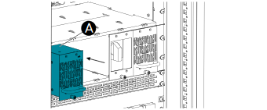

Insert Inverter Modules
- Make sure the module is oriented with the screw at the bottom.
-
Starting at the bottom left, carefully insert the module (A) with both hands in the empty slot in an inverter rack.

- Make sure that the module is fully inserted and that the module front is flush to the protective covers.
-
Tighten the
screw (B) at the bottom.
- Repeat for the remaining modules. There should be no empty slots between the modules.
- If there are any empty slots in the rack, check that blind covers are firmly installed in all empty slots to the right of the module. If necessary, tighten the screws on the blind covers.
-
If there are additional inverter racks, repeat the procedure
for the other inverter racks in the system.
Note: Only the bottom rack will have a manual bypass and a static switch module to the left. Any additional inverter rack will be for up to five inverter modules.